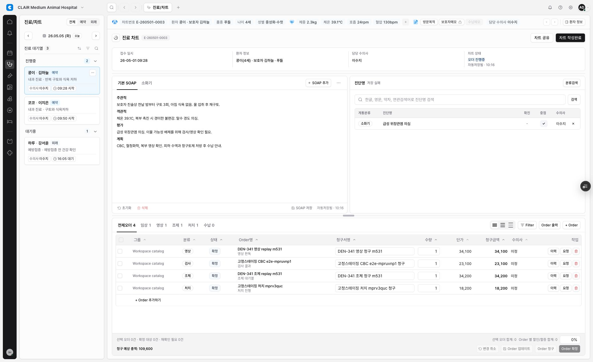
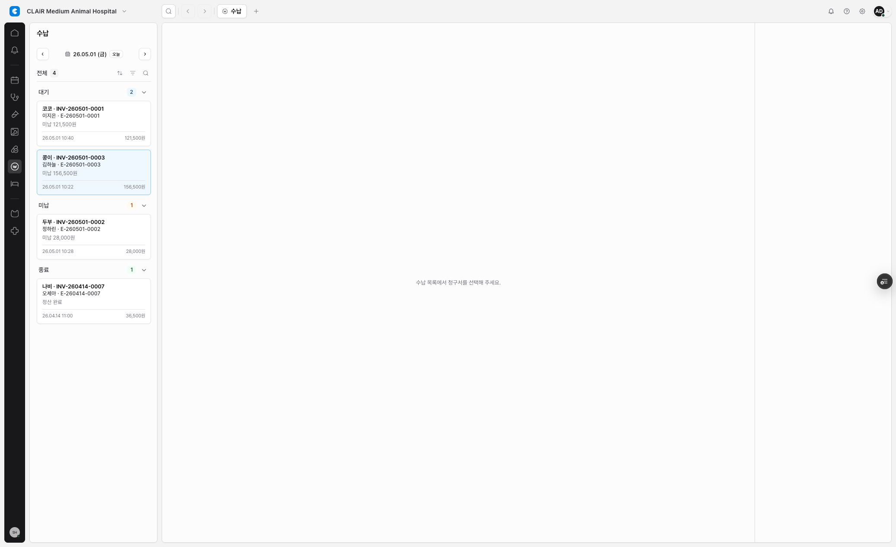
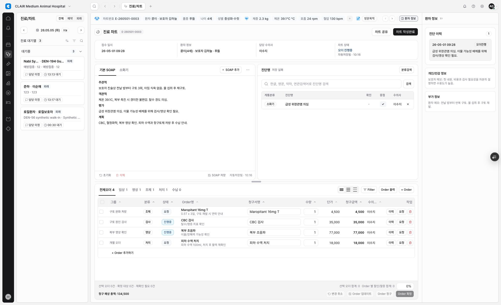
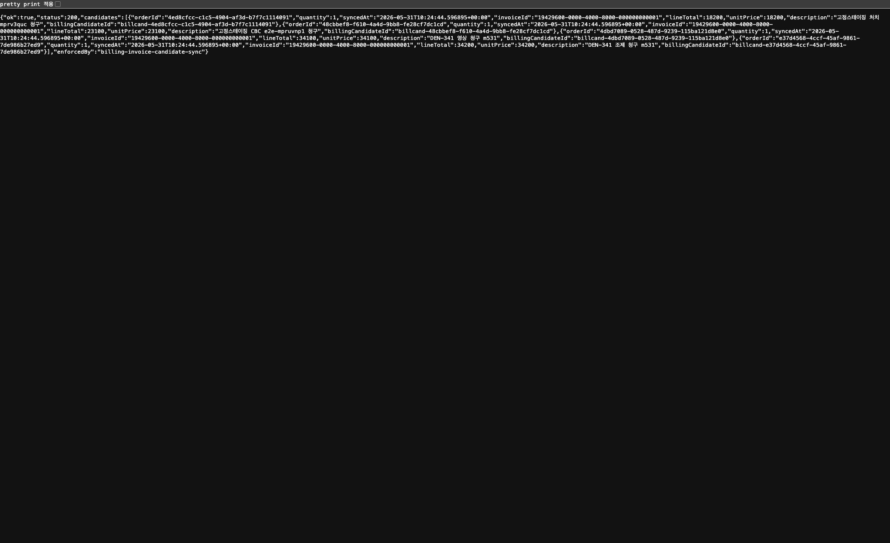
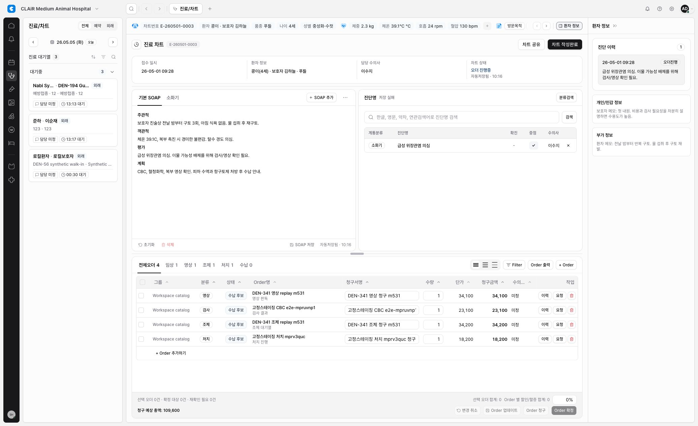

Fixed staging replay passed - follow-up noted
DEN-341 Full Staging Order Billing Replay Report
DEN-341의 full staging replay는 승인 후 고정 staging alias에서 lab, imaging, dispensing, treatment 4종 오더가
Order 청구를 통해 수납 후보 상태와 billing candidate API readback으로 전진한 것을 확인했다.
원격 Supabase migration push, production deploy, 실데이터 import, 원격 RLS replay는 수행하지 않았다.
검수 대상
- Fixed staging: https://emr-app-shell-prototype-staging-mcso0s-projects.vercel.app
- Latest preview assigned to fixed staging: https://emr-app-shell-prototype-kun7k5nmx-mcso0s-projects.vercel.app
- Workspace:
clair-demo - Primary replay chart:
scenario=kong-vomit,encounter-kong-260501
진행 결과
- Vercel 보호/로그인 이후 staging app 접근을 확인했다.
- Fixed staging active catalog에는 lab/treatment만 있어, 병원관리 UI의 정상 catalog creation flow로 DEN-341 synthetic imaging/dispensing rows를 보강했다. remote migration, 실데이터 import, RLS replay는 하지 않았다.
-
Latest preview에서 chart catalog 후보 15건 중 lab, imaging, dispensing, treatment row를 추가하고
Order 확정confirmation까지 통과했다. - 승인 후 preview route fix를 배포했고, billing invoice candidate route가 staging demo encounter alias를 resolved UUID로 변환하는 것을 API readback으로 확인했다.
-
추가로 chart live queue가 explicit
encounter-kong-260501deep link를 첫 live queue item으로 덮어쓰던 문제를 preview에서 고쳤다. -
최신 preview에서 Kong chart deep link가 유지되고, 선택 4건
Order 청구후 chart table 상태가 모두수납 후보로 전진했다. -
/api/workspaces/clair-demo/billing/invoice-candidates?encounterId=encounter-kong-260501readback에서 lab, imaging, dispensing, treatment 4건 billing candidate가 확인됐다. -
승욱 승인 후 고정 staging alias를 latest preview로 연결했고,
chart/order-lifecycle도 demo encounter alias를 resolved UUID로 변환하도록 보강했다. -
고정 staging URL에서
chart/order-lifecycle200/4건, billing candidate API 200/4건, chart table 4건수납 후보readback을 다시 확인했다. - Billing module의 기존 청구 항목 편집 table은 아직 fixture invoice lines 5건을 표시한다. Candidate API와 invoice-line 편집 UI를 합쳐 보여주는 범위는 별도 follow-up으로 남긴다.
-
Chart 화면의
저장 실패문구는 order/billing 경로가 아니라 기존 diagnosis/soap persistence 403 신호로 분리 확인했다.
증거
Chart billing blocker
Preview chart에서 replay order rows는 보이지만, 청구 후 수납 후보로 전진하지 않는다.

Billing readback
Billing workspace는 Kong invoice shell은 보여주지만 replay candidate line readback은 확인되지 않았다.

Chart billing candidate pass
Latest preview에서 4종 replay order가 모두 수납 후보로 전진했다.

Candidate API readback pass
Billing candidate API는 resolved encounter 기준으로 4건 candidate를 반환했다.

Fixed staging chart billing candidate pass
고정 staging alias에서 4종 replay order가 모두 수납 후보로 readback됐다.

Fixed staging candidate API readback pass
고정 staging alias의 billing candidate API는 resolved encounter 기준으로 4건 candidate를 반환했다.

판단
- DEN-340의 local/static 판단은 여전히 유효하다. 코드와 migration contract상 분리된 업무 상태와 수납 후보 상태는 현재 table/RPC 구조로 표현 가능하다.
- DEN-341 preview와 fixed staging replay 기준으로는 remote Supabase migration이 필요하지 않았다. 실패 원인은 DB/RPC 부재가 아니라 app route alias resolution과 live chart deep-link selection이었다.
- 남은 제품/UX 범위는 billing candidate API readback을 billing invoice-line edit table에 어떻게 노출할지 결정하는 것이다.
- Fixed staging alias update는 승욱 승인 후 preview deployment에 한해 수행했다. production deploy는 수행하지 않았다.
승인 후 read-only inspection
-
Supabase project
clair-emr-staging에는20260530141423_den_329_billing_candidate_invoice_anchor까지 migration이 적용되어 있었다. -
clair_save_chart_order_action,clair_list_billing_invoice_candidates,clair_sync_billing_invoice_candidates함수 정의도 존재했다. -
Postgres 로그에서 billing readback 실패 원인은
invalid input syntax for type uuid: "encounter-kong-260501"로 확인했다. billing invoice candidate route가 chart/order route와 달리 staging demo encounter alias를 UUID로 resolve하지 않고 있었다. -
Local fix:
src/app/api/workspaces/[workspaceId]/billing/invoice-candidates/route.ts에resolveServerChartEncounterId를 연결해 GET/PATCH 모두 resolved encounter UUID를 사용하게 했다. -
Regression:
tests/billing-invoice-candidate-sync-server.spec.ts에 route wiring test를 추가했다. -
Local fix:
src/features/chart/module.tsx에서 explicit encounter deep link가 live queue auto-selection에 덮이지 않게 하고, 해당 deep link에서는 mock/scenario bundle fallback을 허용했다. -
Regression:
tests/chart.spec.ts에 chart deep-link preservation wiring test를 추가했다. -
Fixed staging verification에서
chart/order-lifecycleGET이encounter-kong-260501alias를 UUID로 resolve하지 않아 500을 반환하는 것을 확인했고,src/app/api/workspaces/[workspaceId]/chart/order-lifecycle/route.ts에도resolveServerChartEncounterId를 연결했다. -
Regression:
tests/chart-order-lifecycle-persistence-server.spec.ts에 lifecycle route alias wiring test를 추가했다. -
Fixed staging alias는
https://emr-app-shell-prototype-kun7k5nmx-mcso0s-projects.vercel.apppreview deployment를 가리키도록 승인 후 갱신했다. -
고정 staging readback 결과:
chart/order-lifecycle200/4건,billing/invoice-candidates200/4건, candidate line totals18200, 23100, 34100, 34200. -
Secondary signal: confirm 단계에서
order_fulfillment_work_itemsdirect snapshot-enrichment PATCH가 RLS 403을 남긴다. 현재 RPC sync와 audit은 성공하고 이 PATCH 실패는 core에서 무시되지만, source snapshot enrichment를 live persistence requirement로 볼 경우 별도 RLS/RPC hardening이 필요하다. -
별도 secondary signal: chart diagnosis/soap persistence route는 fixed staging URL에서
workspace_membership_missing403을 반환해 화면에저장 실패신호를 남길 수 있다. DEN-341 order/billing replay 통과 조건에는 포함하지 않고 후속 persistence hardening 후보로 분리한다.
금지/미수행
- Production deploy는 하지 않았다.
- 실데이터 import는 하지 않았다.
- 원격 RLS replay는 하지 않았다.
- remote Supabase migration push는 하지 않았다.
- Supabase remote SQL introspection도 승인 전에는 진행하지 않았다.
권장 후속
원격 Supabase migration push는 필요하지 않다. DEN-341은 Human Review로 유지하되, billing candidate rows를 기존 billing invoice-line edit table에 합쳐 표시할지 여부와 diagnosis/soap persistence 403은 별도 follow-up으로 다룬다. production deploy와 remote migration push는 계속 금지한다.